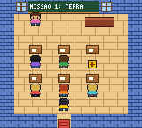
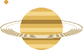
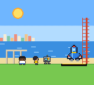
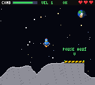
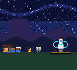
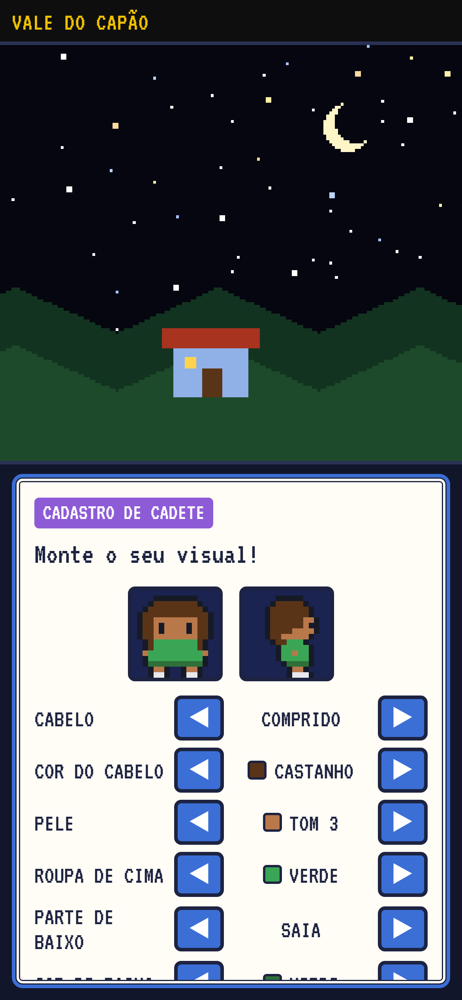
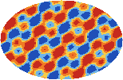

Jogo educativo · Vale do Capão
Astrokdok
A criança entra numa agência espacial no Vale do Capão, estuda na escola da vila e viaja da Lua até a borda do universo. Para crianças de 8 a 12 anos.
Pôr o jogo na tela do celular
Ponha o jogo na tela do celular. Assim ele abre com um toque, como um aplicativo, e o progresso fica guardado.
- Abra o jogo no Chrome.
- Toque nos três pontinhos ⋮.
- Toque em Instalar app ou Adicionar à tela inicial.
- Abra o jogo no Safari.
- Toque em Compartilhar (o quadrado com a seta para cima).
- Toque em Adicionar à Tela de Início.
No iPhone, com o jogo fora da tela de início, o Safari pode apagar o progresso depois de 7 dias sem abrir.
Aponte a câmera do celular para o código: o jogo abre lá. Depois é só seguir o passo a passo do Android ou do iPhone. No computador ele também roda, com as setas e as teclas Z e X.
- zero compra dentro do jogo
- zero anúncio
- zero coleta de dados
MISSÃO 1 · TERRA
A primeira missão é subir até a órbita e fotografar a Terra. Esta subida é o minijogo dela.
KDOK:Bip-bop! Vamos atravessar as camadas da atmosfera até a órbita!
ATÉ 12 KM
Nuvens, chuva e aviões. No jogo, aqui a criança desvia de passarinhos e de aviões com ◀ ▶.
ATÉ 50 KM
Aqui fica a camada de ozônio. E passam os balões.
ATÉ 80 KM
Os meteoros queimam aqui. A estrela cadente que a gente vê do quintal é um meteoro.
KDOK:ÓRBITA ALCANÇADA! 400 km de altura. Estamos na termosfera, junto da Estação Espacial.
Aquela linha fininha brilhando na borda é a atmosfera. É ela que guarda o ar que a gente respira.
Por que eu fiz esse jogo
“Uma professora do meu filho recomendou que ele fizesse mais atividades em casa. E eu, que já vinha fazendo alguns desenvolvimentos, pensei: será que eu não consigo eu mesmo produzir alguma coisa que eu considere saudável pra ele?”
“Quando envolve celular, quando envolve tela, a gente sabe que tem que ter um cuidado diferente.”
Como é uma missão
Cada missão tem o mesmo ritmo, sem pressa.

A escola
Uma aula curta de uma matéria da escola (português, matemática, inglês, ciências, geografia ou história), com pouco texto, o essencial, e desafios com dica.

A astronomia
Uma aula sobre o lugar da próxima viagem.

A base de lançamento
Um guia apresenta a geografia e a história do lugar. Tirando a do Capão, todas as bases existem de verdade.

A viagem
Cada missão tem um minijogo diferente. Pousar na Lua sem amassar a nave, dirigir um jipe-robô em Marte, devolver o gelo aos anéis de Saturno.

Fora da tela
No fim, uma tarefa no mundo de verdade. Olhar a Lua e desenhar a fase, fazer um relógio de sol com um palito, procurar o Cruzeiro do Sul.
Contribua
Chapéu Digital
Não ter preço não quer dizer que não tem valor, nem que não houve trabalho. O jogo me custou tempo, dinheiro e dedicação.
O justo depende de cada casa. Quem pode pagar um pouco mais paga, e assim financia o acesso de quem não pode. Se testou e não gostou, tudo certo: não deve nada.
“Se de repente ele consegue completar o jogo inteiro, que são 18 fases, eu vou sentir: então teve um valor para essa família.”
“Pode contribuir por você e por alguém que não pode contribuir, e vai poder jogar também.”
No marketing existe o high ticket, o preço alto, e o low ticket, o preço baixo. Eu brinco que o Astrokdok é no ticket: não tem preço.
O caderno da Lua
Missões de verdade, longe da tela
Cada missão termina com uma tarefa no mundo de verdade. Estas são as 18, com as palavras do jogo.
“Às vezes tem exercícios pra fazer fora, tipo medir uma sombra que o sol faz.”
As 18 missões
Da Terra à borda do universo. A base do Vale do Capão é inventada (é a da missão 1 e a da missão 18); as outras 16 existem de verdade, de Alcântara, no Maranhão, a Gizé, no Egito.
Dá para testar aqui mesmo
Estas são telas de verdade do jogo, num celular. Passe com as setas. Ele só carrega aqui quando você pedir.
Na tela do celular, o jogo tem setas e os botões A e B. No computador, use as setas e as teclas Z e X.

Fica melhor em tela cheia: abrir o jogo.
Feito com pouco estímulo
“Eu jogava aqueles joguinhos de Game Boy, que tinham um gráfico muito mais saudável, 8 bits, sem tanto estímulo.”
Zero compra dentro do jogo, zero anúncio, zero coleta de dados.
- Gráfico simplesGráfico de 160 por 144 pixels, no estilo dos jogos antigos, e sem chuva de prêmios.
- Sem cadastroO progresso fica salvo só no aparelho.
- Começo e fimCada missão fecha uma etapa: aula, viagem e uma tarefa de verdade.
- Sem internetDepois que abre pela primeira vez, ele funciona sem conexão.
- Papel e lápisPapel, lápis e borracha do lado: o próprio jogo pede.
- Código abertoQualquer pessoa pode ver como o jogo foi feito. Ver no GitHub
“Meu filho não trocaria um momento de jogar Minecraft pelo Astrokdok. E isso é uma coisa boa, porque não é pra trocar. O jogo cumpre a função dele, que é não viciar a criança em mais um aplicativo de tela.”
“É um bom direcionador de estudo. Em vez de tal coisa, hoje vamos estudar um pouco, e tem esse jogo aqui que direciona o estudo. Acaba sendo um pouco divertido.”
Quem faz
Como o jogo foi feito
As ideias nasceram no papel, comigo e com os palpites do meu filho, que testou as mecânicas. O conteúdo veio da internet, com ajuda de inteligência artificial para pesquisar e escrever o código, e com revisão humana o tempo todo.
Os 292 desafios tiveram o gabarito conferido antes de entrar no jogo, e eu tive bastante cuidado com o conteúdo.
O código é aberto: qualquer pessoa pode ver como o jogo foi feito. Ver o código no GitHub.
Novidades, se você quiser
Quero receber novidades do AstrokdokNovas missões e atualizações, por e-mail

A missão 18 sai de casa
A luz mais antiga que dá para ver saiu quando o universo tinha uns 380 mil anos. Ela foi descoberta sem querer, em 1964: dois cientistas ouviam um chiado na antena e acharam que era cocô de pombo.
A última missão sai do Vale do Capão, de noite, e vai até a borda. A medalha do jogo é para quem foi até lá e voltou para casa.
“Última missão de verdade: numa noite escura, deite no chão com alguém de casa e olhe o céu por 10 minutos.”